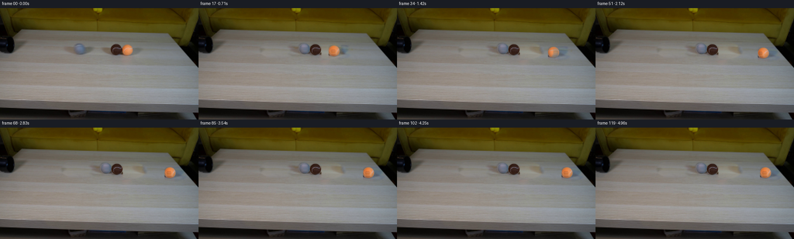
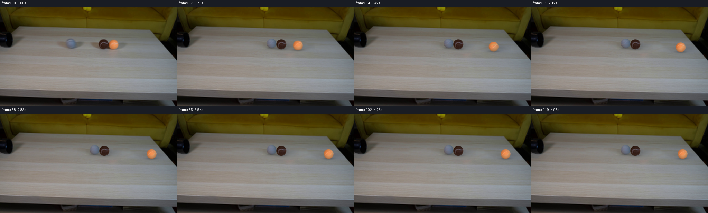
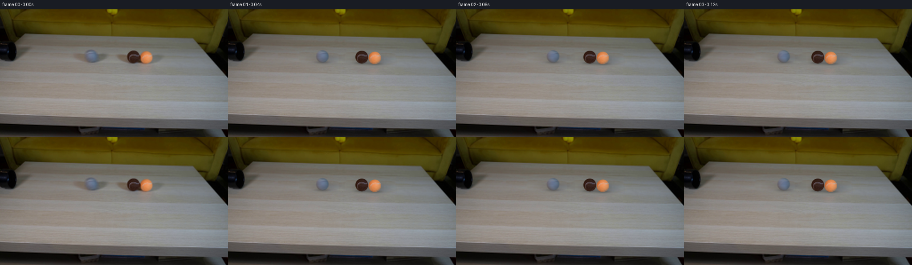
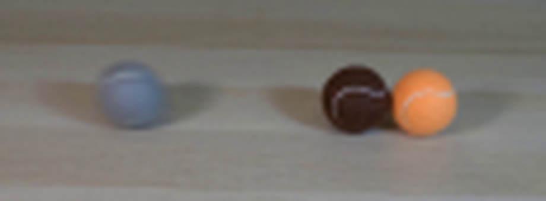
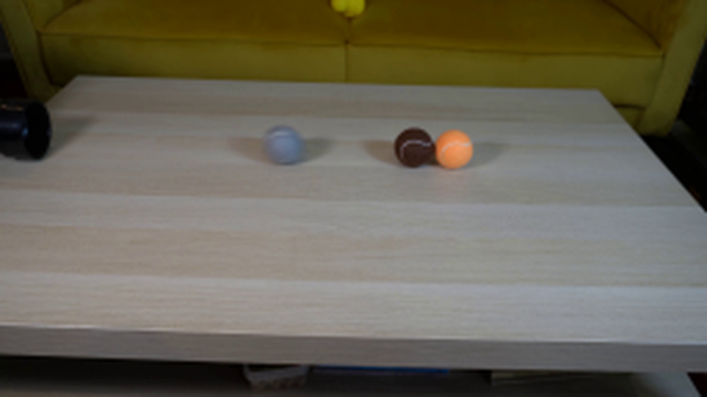
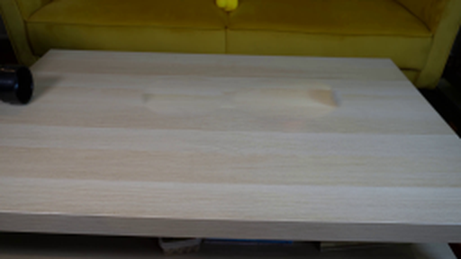
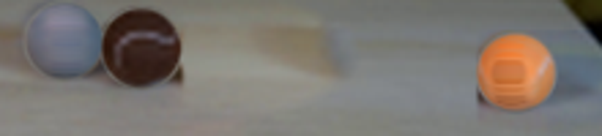

CODING AGENTS AS PIXEL WORLD MODELS
traex/GPT-6.1-Sol · 0029
点击播放 · 原生 RGB 像素
逐轮保存的候选
回放视频、检查图与代码变化。
每份候选均可单独播放。实际图片检查记录在下方工具轨迹中。
候选 01播放与检查图
点击播放 · 原生 RGB 像素

展开代码变化
--- 上一保存版本
+++ 本次保存版本
@@ -0,0 +1,210 @@
+"""Generate a locked-camera tabletop collision from the supplied photograph.
+All synthesis uses local pixel sampling, geometry, and rigid-sphere dynamics.
+"""
+from pathlib import Path
+import numpy as np
+from PIL import Image
+from scipy.ndimage import map_coordinates, gaussian_filter, distance_transform_edt
+import artifact_io
+
+ROOT = Path(__file__).resolve().parent
+SRC = np.array(Image.open(ROOT/'first_frame.png').convert('RGB'), dtype=np.float64)
+H,W = SRC.shape[:2]
+Y,X = np.mgrid[:H,:W]
+
+# Centers and the photographed sphere profiles.
+BALLS = [dict(c=np.array([205.5,105.6]), r=14.15, color='gray'),
+ dict(c=np.array([300.0,107.2]), r=14.55, color='brown'),
+ dict(c=np.array([329.2,109.1]), r=14.25, color='orange')]
+
+
+def background_plate():
+ """Replace only balls and their shadows with neighboring horizontal wood grain.
+ A smoothly fitted color correction makes the copied grain meet its perimeter.
+ """
+ plate=SRC.copy()
+ # Broad soft patches enclosing each shadow without affecting the fixed pipe.
+ areas=[(155,251,82,133,198), (253,382,84,136,-177)]
+ masks=[]
+ for x0,x1,y0,y1,dx in areas:
+ yy,xx=np.mgrid[y0:y1,x0:x1]
+ hh,ww=xx.shape
+ # Elliptic patch shape fitted to the object + low contrast shadow.
+ cx=(x0+x1)/2; cy=(y0+y1)/2
+ dd=((xx-cx)/((x1-x0)/2))**2+((yy-cy)/((y1-y0)/2))**2
+ alpha=np.clip((1-dd)/.24,0,1)
+ donor=SRC[yy,xx+dx].copy()
+ # Match the color and low-order gradients around the untouched border.
+ border=(dd>.78)&(dd<1.08)
+ xn=(xx-cx)/ww; yn=(yy-cy)/hh
+ basis=np.stack([np.ones_like(xn),xn,yn,xn*yn,yn**2],-1)
+ residual=SRC[yy,xx]-donor
+ coeff=np.linalg.lstsq(basis[border],residual[border],rcond=None)[0]
+ correction=basis@coeff
+ fill=np.clip(donor+correction,0,255)
+ plate[yy,xx]=plate[yy,xx]*(1-alpha[...,None])+fill*alpha[...,None]
+ masks.append((x0,x1,y0,y1,alpha))
+ return plate,masks
+
+BG,REGIONS=background_plate()
+
+# Original object extraction. Shading and fuzzy felt originate in the supplied image.
+TEX=[]
+SHADOW=[]
+for i,b in enumerate(BALLS):
+ cx,cy=b['c']; r=b['r']
+ sx,sy=(X-cx)/r,(Y-cy)/r
+ rho=np.sqrt(sx*sx+sy*sy)
+ alpha=np.clip((1.04-rho)/.10,0,1)
+ alpha=gaussian_filter(alpha,.32)
+ # Obtain a low-order stationary illumination function, rejecting white seams.
+ inside=rho<.90
+ coords=np.stack([np.ones_like(sx),sx,sy,sx*sx,sy*sy,sx*sy],-1)
+ values=SRC[inside]
+ mat=coords[inside]
+ coeff=np.linalg.lstsq(mat,values,rcond=None)[0]
+ for _ in range(3):
+ residual=np.linalg.norm(values-mat@coeff,axis=1)
+ good=residual<np.percentile(residual,80)
+ coeff=np.linalg.lstsq(mat[good],values[good],rcond=None)[0]
+ illumination=np.maximum(coords@coeff,8)
+ # Background-contaminated boundary pixels are unpremultiplied, then extended.
+ unmix=(SRC-BG*(1-alpha[...,None]))/np.maximum(alpha[...,None],.2)
+ original=np.where((rho<.93)[...,None],SRC,unmix)
+ field=original/illumination
+ valid=rho<.96
+ _,indices=distance_transform_edt(~valid,return_indices=True)
+ field=field[indices[0],indices[1]]
+ TEX.append(dict(field=field,coeff=coeff,alpha=alpha))
+
+# Isolate the soft table shadows as relative transmission. Small table texture
+# variation remains from the photographed shadow so it looks grounded.
+for i,b in enumerate(BALLS):
+ cx,cy=b['c'];r=b['r']
+ x0=int(cx-46);x1=int(cx+49);y0=int(cy-16);y1=int(cy+29)
+ yy,xx=np.mgrid[y0:y1,x0:x1]
+ diff=SRC[y0:y1,x0:x1]-BG[y0:y1,x0:x1]
+ sphere_zone=np.zeros((y1-y0,x1-x0))
+ # Disentangle the brown / orange adjacent patches around their midpoint.
+ if i==0:
+ owner=np.ones(xx.shape)
+ elif i==1:
+ owner=np.clip((316.2-xx)/2.0,0,1)
+ else:
+ owner=1-np.clip((316.2-xx)/2.0,0,1)
+ for other in BALLS:
+ rr=((xx-other['c'][0])/other['r'])**2+((yy-other['c'][1])/other['r'])**2
+ sphere_zone=np.maximum(sphere_zone,np.clip((1.18-rr)/.15,0,1))
+ valid=(1-sphere_zone)*owner
+ # Only transfer darker local differences -- no displaced wood-grain highlights.
+ delta=gaussian_filter(np.minimum(diff,0),(.65,.65,0))*valid[...,None]
+ # Missing shadow beneath the ball is covered by a smooth contact contribution.
+ contact=np.exp(-(((xx-cx)/13)**2+((yy-(cy+r-1))/3.8)**2)/2)*.20
+ delta-=BG[y0:y1,x0:x1]*contact[...,None]*sphere_zone[...,None]*owner[...,None]
+ SHADOW.append(dict(x0=x0,y0=y0,delta=delta))
+
+
+def trajectory():
+ # The table projection foreshortens the ground-plane depth by 0.46.
+ scale=.46
+ p=np.array([[b['c'][0],b['c'][1]/scale] for b in BALLS])
+ v=np.array([[145.,0.],[0.,0.],[0.,0.]])
+ radii=np.array([b['r'] for b in BALLS])
+ angle=np.zeros(3)
+ history=[]
+ dt=1/480
+ for step in range(120*20):
+ if step%20==0:
+ out=p.copy();out[:,1]*=scale
+ vel=v.copy();vel[:,1]*=scale
+ history.append((out,vel,angle.copy()))
+ speed=np.linalg.norm(v,axis=1)
+ friction=50.
+ v*=np.maximum(0,1-friction*dt/np.maximum(speed,1e-10))[:,None]
+ p+=v*dt
+ angle+=v[:,0]*dt/radii
+ for _ in range(3):
+ for a,c in [(0,1),(1,2),(0,2)]:
+ displacement=p[c]-p[a]
+ dist=np.linalg.norm(displacement)
+ separation=radii[a]+radii[c]
+ if dist<separation:
+ n=displacement/max(dist,1e-8)
+ closing=np.dot(v[c]-v[a],n)
+ if closing<0:
+ j=-(1+.88)*closing/2
+ v[a]-=j*n
+ v[c]+=j*n
+ penetration=separation-dist
+ p[a]-=n*penetration/2
+ p[c]+=n*penetration/2
+ return history
+
+HISTORY=trajectory()
+
+
+def sample_rgb(data,y,x):
+ return np.stack([map_coordinates(data[:,:,ch],[y,x],order=1,mode='nearest') for ch in range(3)],-1)
+
+
+def draw_shadow(frame,idx,pos):
+ b=BALLS[idx]; sh=SHADOW[idx]
+ delta=sh['delta']; dh,dw=delta.shape[:2]
+ displacement=pos-b['c']
+ left=int(np.floor(sh['x0']+displacement[0]))-2
+ top=int(np.floor(sh['y0']+displacement[1]))-2
+ right=min(W,left+dw+4);bottom=min(H,top+dh+4)
+ left=max(0,left);top=max(0,top)
+ if right<=left or bottom<=top:return
+ yy,xx=np.mgrid[top:bottom,left:right]
+ sampley=yy-displacement[1]-sh['y0']; samplex=xx-displacement[0]-sh['x0']
+ d=np.stack([map_coordinates(delta[:,:,ch],[sampley,samplex],order=1,mode='constant',cval=0) for ch in range(3)],-1)
+ # Transmission adapts to small variations in the wood at the destination.
+ frame[top:bottom,left:right]+=d
+
+
+def draw_ball(frame,idx,pos,angle,vel):
+ b=BALLS[idx];r=b['r'];tex=TEX[idx]
+ x0=max(0,int(pos[0]-r-4));x1=min(W,int(pos[0]+r+5))
+ y0=max(0,int(pos[1]-r-4));y1=min(H,int(pos[1]+r+5))
+ if x1<=x0 or y1<=y0:return
+ yy,xx=np.mgrid[y0:y1,x0:x1]
+ # Three shutter samples give rolling balls continuous, modest motion blur.
+ accumulated=np.zeros((y1-y0,x1-x0,3)); opacity=np.zeros((y1-y0,x1-x0))
+ for shutter in [-1/144,0,1/144]:
+ cur=pos+vel*shutter
+ a=angle+vel[0]*shutter/r
+ nx=(xx-cur[0])/r;ny=(yy-cur[1])/r
+ rho=np.sqrt(nx*nx+ny*ny)
+ alpha=np.clip((1.04-rho)/.10,0,1)
+ alpha=gaussian_filter(alpha,.32)
+ # Image-based full sphere texture: the unseen hemisphere is a smooth
+ # mirrored continuation. Rotate the surface, not the fixed illumination.
+ z=np.sqrt(np.maximum(0,1-nx*nx-ny*ny))
+ tx=np.cos(a)*nx-np.sin(a)*z
+ ty=ny
+ field=sample_rgb(tex['field'],b['c'][1]+ty*r,b['c'][0]+tx*r)
+ basis=np.stack([np.ones_like(nx),nx,ny,nx*nx,ny*ny,nx*ny],-1)
+ illumination=np.maximum(basis@tex['coeff'],8)
+ color=np.clip(field*illumination,0,255)
+ accumulated+=color*alpha[...,None]/3
+ opacity+=alpha/3
+ frame[y0:y1,x0:x1]=frame[y0:y1,x0:x1]*(1-opacity[...,None])+accumulated
+
+
+def generate():
+ frames=np.empty((120,H,W,3),dtype=np.uint8)
+ frames[0]=SRC.astype(np.uint8)
+ for k in range(1,120):
+ positions,velocities,angles=HISTORY[k]
+ img=BG.copy()
+ for i in range(3):draw_shadow(img,i,positions[i])
+ for i in np.argsort(positions[:,1]):
+ draw_ball(img,i,positions[i],angles[i],velocities[i])
+ frames[k]=np.clip(np.rint(img),0,255).astype(np.uint8)
+ artifact_io.save(frames,ROOT)
+ Image.fromarray(BG.astype(np.uint8)).save(ROOT/'.tmp/background.png')
+ print('Saved',frames.shape,'RGB frames')
+ for k in [0,8,12,16,24,48,72,119]:print(k,HISTORY[k][0],HISTORY[k][1])
+
+if __name__=='__main__':generate()
候选 02播放与检查图
点击播放 · 原生 RGB 像素


展开代码变化
--- 上一保存版本
+++ 本次保存版本
@@ -33,7 +33,8 @@
cx=(x0+x1)/2; cy=(y0+y1)/2
dd=((xx-cx)/((x1-x0)/2))**2+((yy-cy)/((y1-y0)/2))**2
alpha=np.clip((1-dd)/.24,0,1)
- donor=SRC[yy,xx+dx].copy()
+ donor_x=60+(xx-x0)/(x1-x0)*91
+ donor=np.stack([map_coordinates(SRC[:,:,ch],[yy,donor_x],order=1,mode='nearest') for ch in range(3)],-1)
# Match the color and low-order gradients around the untouched border.
border=(dd>.78)&(dd<1.08)
xn=(xx-cx)/ww; yn=(yy-cy)/hh
@@ -72,7 +73,7 @@
unmix=(SRC-BG*(1-alpha[...,None]))/np.maximum(alpha[...,None],.2)
original=np.where((rho<.93)[...,None],SRC,unmix)
field=original/illumination
- valid=rho<.96
+ valid=rho<.86
_,indices=distance_transform_edt(~valid,return_indices=True)
field=field[indices[0],indices[1]]
TEX.append(dict(field=field,coeff=coeff,alpha=alpha))
@@ -148,19 +149,18 @@
def draw_shadow(frame,idx,pos):
- b=BALLS[idx]; sh=SHADOW[idx]
- delta=sh['delta']; dh,dw=delta.shape[:2]
- displacement=pos-b['c']
- left=int(np.floor(sh['x0']+displacement[0]))-2
- top=int(np.floor(sh['y0']+displacement[1]))-2
- right=min(W,left+dw+4);bottom=min(H,top+dh+4)
- left=max(0,left);top=max(0,top)
- if right<=left or bottom<=top:return
- yy,xx=np.mgrid[top:bottom,left:right]
- sampley=yy-displacement[1]-sh['y0']; samplex=xx-displacement[0]-sh['x0']
- d=np.stack([map_coordinates(delta[:,:,ch],[sampley,samplex],order=1,mode='constant',cval=0) for ch in range(3)],-1)
- # Transmission adapts to small variations in the wood at the destination.
- frame[top:bottom,left:right]+=d
+ # Two broad room-light shadows and a short occlusion shadow at contact.
+ b=BALLS[idx]; r=b['r']
+ x0=max(0,int(pos[0]-51));x1=min(W,int(pos[0]+51))
+ y0=max(0,int(pos[1]-11));y1=min(H,int(pos[1]+28))
+ if x1<=x0 or y1<=y0:return
+ yy,xx=np.mgrid[y0:y1,x0:x1]
+ u=xx-pos[0];v=yy-pos[1]
+ left=np.exp(-.5*(((u+17)/18)**2+((v-5-.05*u)/6.4)**2))
+ right=np.exp(-.5*(((u-17)/18)**2+((v-5+.02*u)/7.0)**2))
+ contact=np.exp(-.5*((u/10.8)**2+((v-r+1)/2.2)**2))
+ shade=left[...,None]*np.array([.072,.087,.118])+right[...,None]*np.array([.128,.116,.090])+contact[...,None]*.23
+ frame[y0:y1,x0:x1]*=(1-shade)
def draw_ball(frame,idx,pos,angle,vel):
@@ -184,6 +184,20 @@
tx=np.cos(a)*nx-np.sin(a)*z
ty=ny
field=sample_rgb(tex['field'],b['c'][1]+ty*r,b['c'][0]+tx*r)
+ # After rotating away from the photographed hemisphere, continue the
+ # felt texture and the tennis seam across the otherwise unseen sphere.
+ blend=np.clip((abs(a)-.20)/.65,0,1)
+ if blend>0 and idx!=1:
+ nz=np.sin(a)*nx+np.cos(a)*z
+ lon=np.arctan2(tx,nz)
+ lat=np.arcsin(np.clip(ny,-1,1))
+ seam_distance=np.abs(lat-(.46*np.sin(2*lon+.20)-.18))
+ seam=np.exp(-.5*(seam_distance/.048)**2)
+ base=np.clip(field,.91,1.06)
+ # Procedural seam is off-white felt, never a hard graphic line.
+ tint=np.array([1.15,1.08,1.02]) if idx==0 else np.array([1.08,1.18,1.45])
+ continued=base*(1-seam[...,None]*.73)+tint*seam[...,None]*.73
+ field=field*(1-blend)+continued*blend
basis=np.stack([np.ones_like(nx),nx,ny,nx*nx,ny*ny,nx*ny],-1)
illumination=np.maximum(basis@tex['coeff'],8)
color=np.clip(field*illumination,0,255)
可观测工具轨迹
实际执行的命令与返回图片。
命令 1exit 0
/bin/bash -lc 'ls -la; cat prompt.txt; cat GENERATION_RULES.md'
命令 2exit 0
/bin/bash -lc "cat task_spec.json; cat artifact_io.py; python - <<'PY'
from PIL import Image
im=Image.open('first_frame.png')
im.crop((150,65,380,150)).resize((920,340)).save('.tmp/balls_crop.png')
PY"命令 3exit 0
/bin/bash -lc "python - <<'PY'
from PIL import Image
im=Image.open('first_frame.png')
im.resize((1024,576)).save('.tmp/full.png')
PY"命令 4exit 0
/bin/bash -lc "python - <<'PY' import importlib.util for m in ['cv2','scipy','numpy','PIL']: print(m, bool(importlib.util.find_spec(m))) PY"
命令 5exit 1
/bin/bash -lc "cat > generate.py <<'PY'
\"\"\"Generate a locked-camera tabletop collision from the supplied photograph.
All synthesis uses local pixel sampling, geometry, and rigid-sphere dynamics.
\"\"\"
from pathlib import Path
import numpy as np
from PIL import Image
from scipy.ndimage import map_coordinates, gaussian_filter, distance_transform_edt
import artifact_io
ROOT = Path(__file__).resolve().parent
SRC = np.array(Image.open(ROOT/'first_frame.png').convert('RGB'), dtype=np.float64)
H,W = SRC.shape[:2]
Y,X = np.mgrid[:H,:W]
# Centers and the photographed sphere profiles.
BALLS = [dict(c=np.array([205.5,105.6]), r=14.15, color='gray'),
dict(c=np.array([300.0,107.2]), r=14.55, color='brown'),
dict(c=np.array([329.2,109.1]), r=14.25, color='orange')]
def background_plate():
\"\"\"Replace only balls and their shadows with neighboring horizontal wood grain.
A smoothly fitted color correction makes the copied grain meet its perimeter.
\"\"\"
plate=SRC.copy()
# Broad soft patches enclosing each shadow without affecting the fixed pipe.
areas=[(155,251,82,133,198), (253,382,84,136,-177)]
masks=[]
for x0,x1,y0,y1,dx in areas:
yy,xx=np.mgrid[y0:y1,x0:x1]
hh,ww=xx.shape
# Elliptic patch shape fitted to the object + low contrast shadow.
cx=(x0+x1)/2; cy=(y0+y1)/2
dd=((xx-cx)/((x1-x0)/2))**2+((yy-cy)/((y1-y0)/2))**2
alpha=np.clip((1-dd)/.24,0,1)
donor=SRC[yy,xx+dx].copy()
# Match the color and low-order gradients around the untouched border.
border=(dd>.78)&(dd<1.08)
xn=(xx-cx)/ww; yn=(yy-cy)/hh
basis=np.stack([np.ones_like(xn),xn,yn,xn*yn,yn**2],-1)
residual=SRC[yy,xx]-donor
coeff=np.linalg.lstsq(basis[border],residual[border],rcond=None)[0]
correction=basis@coeff
fill=np.clip(donor+correction,0,255)
plate[yy,xx]=plate[yy,xx]*(1-alpha[...,None])+fill*alpha[...,None]
masks.append((x0,x1,y0,y1,alpha))
return plate,masks
BG,REGIONS=background_plate()
# Original object extraction. Shading and fuzzy felt originate in the supplied image.
TEX=[]
SHADOW=[]
for i,b in enumerate(BALLS):
cx,cy=b['c']; r=b['r']
sx,sy=(X-cx)/r,(Y-cy)/r
rho=np.sqrt(sx*sx+sy*sy)
alpha=np.clip((1.04-rho)/.10,0,1)
alpha=gaussian_filter(alpha,.32)
# Obtain a low-order stationary illumination function, rejecting white seams.
inside=rho<.90
coords=np.stack([np.ones_like(sx),sx,sy,sx*sx,sy*sy,sx*sy],-1)
values=SRC[inside]
mat=coords[inside]
coeff=np.linalg.lstsq(mat,values,rcond=None)[0]
for _ in range(3):
residual=np.linalg.norm(values-mat@coeff,axis=1)
good=residual<np.percentile(residual,80)
coeff=np.linalg.lstsq(mat[good],values[good],rcond=None)[0]
illumination=np.maximum(coords@coeff,8)
# Background-contaminated boundary pixels are unpremultiplied, then extended.
unmix=(SRC-BG*(1-alpha[...,None]))/np.maximum(alpha[...,None],.2)
original=np.where((rho<.93)[...,None],SRC,unmix)
field=original/illumination
valid=rho<.96
_,indices=distance_transform_edt(~valid,return_indices=True)
field=field[indices[0],indices[1]]
TEX.append(dict(field=field,coeff=coeff,alpha=alpha))
# Isolate the soft table shadows as relative transmission. Small table texture
# variation remains from the photographed shadow so it looks grounded.
for i,b in enumerate(BALLS):
cx,cy=b['c'];r=b['r']
x0=int(cx-46);x1=int(cx+49);y0=int(cy-16);y1=int(cy+29)
yy,xx=np.mgrid[y0:y1,x0:x1]
diff=SRC[y0:y1,x0:x1]-BG[y0:y1,x0:x1]
sphere_zone=np.zeros((y1-y0,x1-x0))
# Disentangle the brown / orange adjacent patches around their midpoint.
if i==0:
owner=np.ones(xx.shape)
elif i==1:
owner=np.clip((316.2-xx)/2.0,0,1)
else:
owner=1-np.clip((316.2-xx)/2.0,0,1)
for other in BALLS:
rr=((xx-other['c'][0])/other['r'])**2+((yy-other['c'][1])/other['r'])**2
sphere_zone=np.maximum(sphere_zone,np.clip((1.18-rr)/.15,0,1))
valid=(1-sphere_zone)*owner
# Only transfer darker local differences -- no displaced wood-grain highlights.
delta=gaussian_filter(np.minimum(diff,0),(.65,.65,0))*valid[...,None]
# Missing shadow beneath the ball is covered by a smooth contact contribution.
contact=np.exp(-(((xx-cx)/13)**2+((yy-(cy+r-1))/3.8)**2)/2)*.20
delta-=BG[y0:y1,x0:x1]*contact[...,None]*sphere_zone[...,None]*owner[...,None]
SHADOW.append(dict(x0=x0,y0=y0,delta=delta))
def trajectory():
# The table projection foreshortens the ground-plane depth by 0.46.
scale=.46
p=np.array([[b['c'][0],b['c'][1]/scale] for b in BALLS])
v=np.array([[145.,0.],[0.,0.],[0.,0.]])
radii=np.array([b['r'] for b in BALLS])
angle=np.zeros(3)
history=[]
dt=1/480
for step in range(120*20):
if step%20==0:
out=p.copy();out[:,1]*=scale
vel=v.copy();vel[:,1]*=scale
history.append((out,vel,angle.copy()))
speed=np.linalg.norm(v,axis=1)
friction=50.
v*=np.maximum(0,1-friction*dt/np.maximum(speed,1e-10))[:,None]
p+=v*dt
angle+=v[:,0]*dt/radii
for _ in range(3):
for a,c in [(0,1),(1,2),(0,2)]:
displacement=p[c]-p[a]
dist=np.linalg.norm(displacement)
separation=radii[a]+radii[c]
if dist<separation:
n=displacement/max(dist,1e-8)
closing=np.dot(v[c]-v[a],n)
if closing<0:
j=-(1+.88)*closing/2
v[a]-=j*n
v[c]+=j*n
penetration=separation-dist
p[a]-=n*penetration/2
p[c]+=n*penetration/2
return history
HISTORY=trajectory()
def sample_rgb(data,y,x):
return np.stack([map_coordinates(data[:,:,ch],[y,x],order=1,mode='nearest') for ch in range(3)],-1)
def draw_shadow(frame,idx,pos):
b=BALLS[idx]; sh=SHADOW[idx]
delta=sh['delta']; dh,dw=delta.shape
displacement=pos-b['c']
left=int(np.floor(sh['x0']+displacement[0]))-2
top=int(np.floor(sh['y0']+displacement[1]))-2
right=min(W,left+dw+4);bottom=min(H,top+dh+4)
left=max(0,left);top=max(0,top)
if right<=left or bottom<=top:return
yy,xx=np.mgrid[top:bottom,left:right]
sampley=yy-displacement[1]-sh['y0']; samplex=xx-displacement[0]-sh['x0']
d=np.stack([map_coordinates(delta[:,:,ch],[sampley,samplex],order=1,mode='constant',cval=0) for ch in range(3)],-1)
# Transmission adapts to small variations in the wood at the destination.
frame[top:bottom,left:right]+=d
def draw_ball(frame,idx,pos,angle,vel):
b=BALLS[idx];r=b['r'];tex=TEX[idx]
x0=max(0,int(pos[0]-r-4));x1=min(W,int(pos[0]+r+5))
y0=max(0,int(pos[1]-r-4));y1=min(H,int(pos[1]+r+5))
if x1<=x0 or y1<=y0:return
yy,xx=np.mgrid[y0:y1,x0:x1]
# Three shutter samples give rolling balls continuous, modest motion blur.
accumulated=np.zeros((y1-y0,x1-x0,3)); opacity=np.zeros((y1-y0,x1-x0))
for shutter in [-1/144,0,1/144]:
cur=pos+vel*shutter
a=angle+vel[0]*shutter/r
nx=(xx-cur[0])/r;ny=(yy-cur[1])/r
rho=np.sqrt(nx*nx+ny*ny)
alpha=np.clip((1.04-rho)/.10,0,1)
alpha=gaussian_filter(alpha,.32)
# Image-based full sphere texture: the unseen hemisphere is a smooth
# mirrored continuation. Rotate the surface, not the fixed illumination.
z=np.sqrt(np.maximum(0,1-nx*nx-ny*ny))
tx=np.cos(a)*nx-np.sin(a)*z
ty=ny
field=sample_rgb(tex['field'],b['c'][1]+ty*r,b['c'][0]+tx*r)
basis=np.stack([np.ones_like(nx),nx,ny,nx*nx,ny*ny,nx*ny],-1)
illumination=np.maximum(basis@tex['coeff'],8)
color=np.clip(field*illumination,0,255)
accumulated+=color*alpha[...,None]/3
opacity+=alpha/3
frame[y0:y1,x0:x1]=frame[y0:y1,x0:x1]*(1-opacity[...,None])+accumulated
def generate():
frames=np.empty((120,H,W,3),dtype=np.uint8)
frames[0]=SRC.astype(np.uint8)
for k in range(1,120):
positions,velocities,angles=HISTORY[k]
img=BG.copy()
for i in range(3):draw_shadow(img,i,positions[i])
for i in np.argsort(positions[:,1]):
draw_ball(img,i,positions[i],angles[i],velocities[i])
frames[k]=np.clip(np.rint(img),0,255).astype(np.uint8)
artifact_io.save(frames,ROOT)
Image.fromarray(BG.astype(np.uint8)).save(ROOT/'.tmp/background.png')
print('Saved',frames.shape,'RGB frames')
for k in [0,8,12,16,24,48,72,119]:print(k,HISTORY[k][0],HISTORY[k][1])
if __name__=='__main__':generate()
PY
python generate.py"命令 6exit 0
/bin/bash -lc 'sed -i "s/dh,dw=delta.shape/dh,dw=delta.shape[:2]/" generate.py python generate.py'
命令 7exit 0
/bin/bash -lc "python - <<'PY'
from PIL import Image
im=Image.open('frames/68.png')
im.crop((250,90,470,140)).resize((1100,250)).save('.tmp/latest_crop.png')
PY"命令 8exit 0
/bin/bash -lc "python - <<'PY'
p='generate.py'
s=open(p).read()
s=s.replace(\"donor=SRC[yy,xx+dx].copy()\", \"donor_x=60+(xx-x0)/(x1-x0)*91\\n donor=np.stack([map_coordinates(SRC[:,:,ch],[yy,donor_x],order=1,mode='nearest') for ch in range(3)],-1)\")
s=s.replace(\"valid=rho<.96\", \"valid=rho<.86\")
start=s.index('def draw_shadow(')
end=s.index('\\n\\ndef draw_ball',start)
s=s[:start]+'''def draw_shadow(frame,idx,pos):
# Two broad room-light shadows and a short occlusion shadow at contact.
b=BALLS[idx]; r=b['r']
x0=max(0,int(pos[0]-51));x1=min(W,int(pos[0]+51))
y0=max(0,int(pos[1]-11));y1=min(H,int(pos[1]+28))
if x1<=x0 or y1<=y0:return
yy,xx=np.mgrid[y0:y1,x0:x1]
u=xx-pos[0];v=yy-pos[1]
left=np.exp(-.5*(((u+17)/18)**2+((v-5-.05*u)/6.4)**2))
right=np.exp(-.5*(((u-17)/18)**2+((v-5+.02*u)/7.0)**2))
contact=np.exp(-.5*((u/10.8)**2+((v-r+1)/2.2)**2))
shade=left[...,None]*np.array([.072,.087,.118])+right[...,None]*np.array([.128,.116,.090])+contact[...,None]*.23
frame[y0:y1,x0:x1]*=(1-shade)
''' +s[end:]
old=\"\"\"field=sample_rgb(tex['field'],b['c'][1]+ty*r,b['c'][0]+tx*r)
basis=\"\"\"
new=\"\"\"field=sample_rgb(tex['field'],b['c'][1]+ty*r,b['c'][0]+tx*r)
# After rotating away from the photographed hemisphere, continue the
# felt texture and the tennis seam across the otherwise unseen sphere.
blend=np.clip((abs(a)-.20)/.65,0,1)
if blend>0 and idx"'!=1:
nz=np.sin(a)*nx+np.cos(a)*z
lon=np.arctan2(tx,nz)
lat=np.arcsin(np.clip(ny,-1,1))
seam_distance=np.abs(lat-(.46*np.sin(2*lon+.20)-.18))
seam=np.exp(-.5*(seam_distance/.048)**2)
base=np.clip(field,.91,1.06)
# Procedural seam is off-white felt, never a hard graphic line.
tint=np.array([1.15,1.08,1.02]) if idx==0 else np.array([1.08,1.18,1.45])
continued=base*(1-seam[...,None]*.73)+tint*seam[...,None]*.73
field=field*(1-blend)+continued*blend
basis="""
assert old in s
s=s.replace(old,new)
open(p,'"'w').write(s)
PY
python generate.py"命令 9exit 0
/bin/bash -lc "which ffmpeg || true; python - <<'PY'
import numpy as np
from PIL import Image
from pathlib import Path
p=np.load('pixels.npz')['pixels']
first=np.array(Image.open('first_frame.png').convert('RGB'))
rgb=np.stack([(p[:,:,0]>>16)&255,(p[:,:,0]>>8)&255,p[:,:,0]&255],axis=-1).astype(np.uint8)
assert p.shape==(288,512,120)
assert np.array_equal(first,rgb)
assert len(list(Path('frames').glob('*.png')))==120
print('Verified 120 frames, 512x288, and pixel-identical frame 00.')
PY"视觉工具实际返回图片 1

视觉工具实际返回图片 2

视觉工具实际返回图片 3

视觉工具实际返回图片 4

视觉工具实际返回图片 5

视觉工具实际返回图片 6

视觉工具实际返回图片 7

保存候选 2 份；完成命令 9 次；可验证图片返回 7 张。原始 API 响应与完整日志保留在本地。
运行生命周期事件
2026-11-13T15:19:09.719156+00:00 · thread.started · 2026-11-13T15:19:10.809602+00:00 · turn.started · 2026-11-13T15:25:59.019655+00:00 · turn.completed ·